James H. CampbellA visual journey tracing his path from rural beginnings to national prominence.
"Williamsport, PA (c. 1820), where James H. Campbell was born on February 8, 1820. Though his childhood home no longer stands, this area reflects the rural setting of his early life."
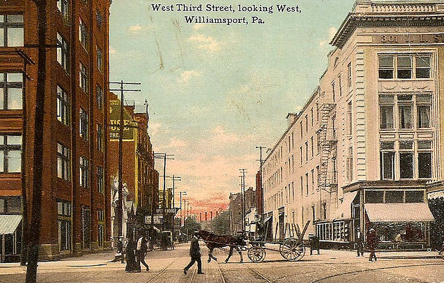
Birthplace: Williamsport, PA
"Dickinson Law College, Carlisle, PA (1840–1841). Campbell studied law here, graduating in 1841. The school’s emphasis on civic duty shaped his career in public service."
Education: Dickinson Law College, Carlisle, PA
"Pottsville, PA (1841–1864). Campbell established his law practice here and became a prominent community figure, hosting social events and joining local organizations like the Miner’s Lodge."
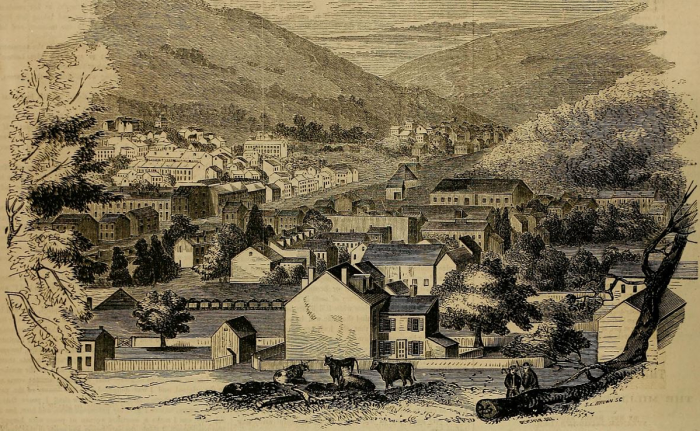
Early Career: Pottsville, PA
"Capitol"
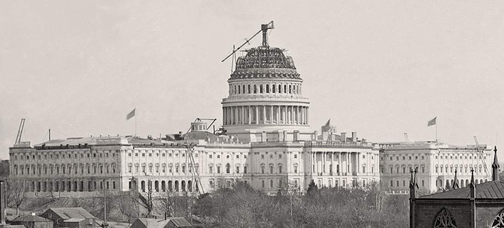
Congressional Service: Washington, D.C.
"The National Hotel, Washington, D.C. (1855–1857). Campbell resided here during his first Congressional term. The hotel housed many politicians near the Capitol, now replaced by modern buildings."
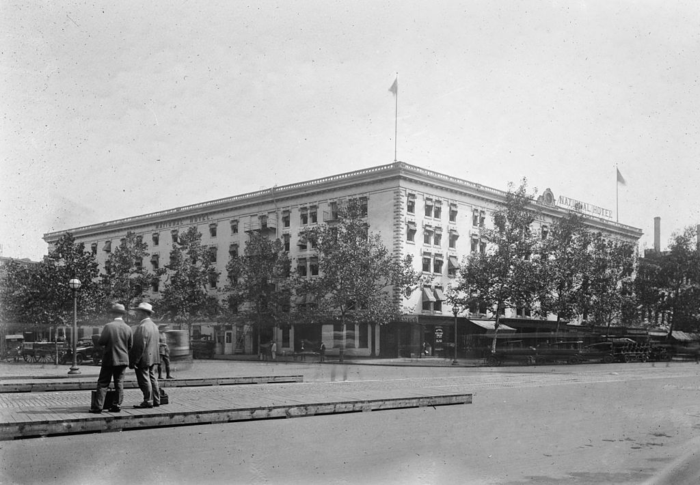
Congressional Service: Washington, D.C.
"Washington House"
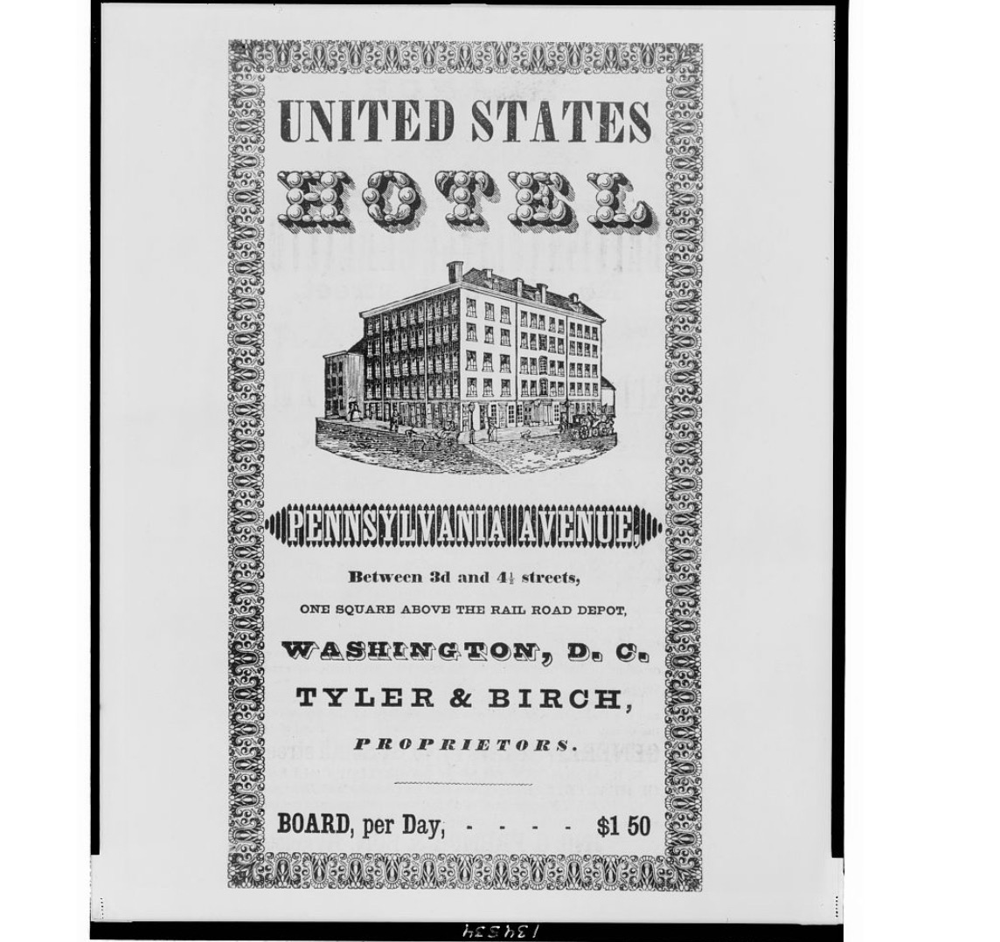
Congressional Service: Washington, D.C.
"Legation of the United States, Stockholm (1864–1867). As Minister Resident, Campbell met King Charles XV here, strengthening U.S.-Sweden relations during the post-Civil War era."
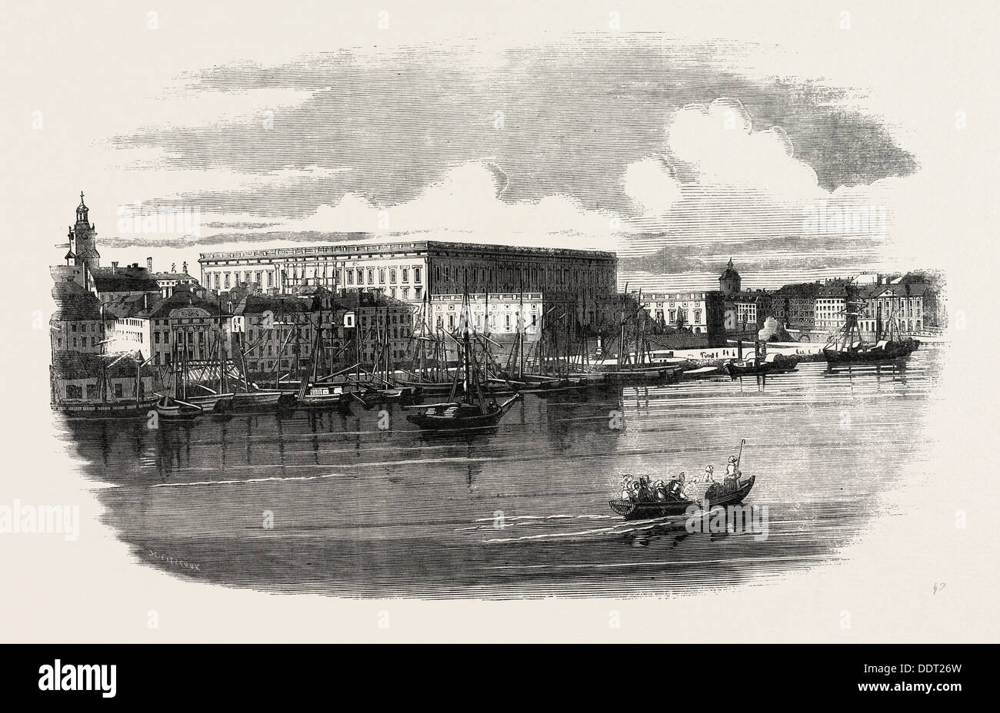
Diplomatic Post: Stockholm, Sweden
"2039 Delaney Place, Philadelphia (1867–1887). Campbell resumed his law career here.
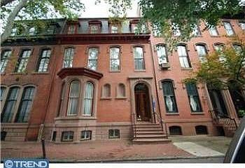
Later Life: Philadelphia, PA
working at 130 S. 6th Street, known as ‘Lawyer’s Row.’"
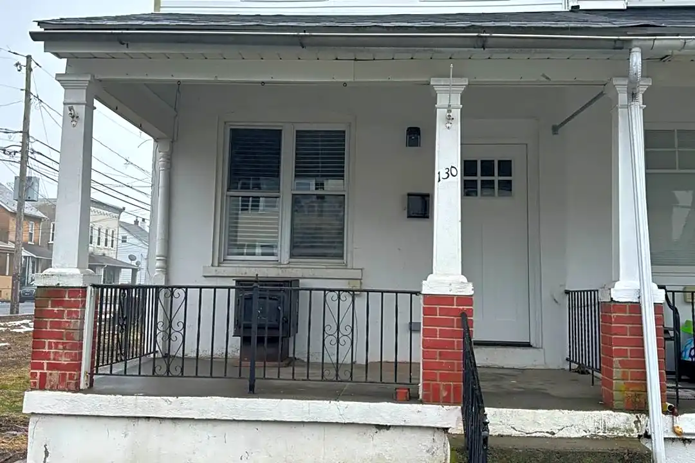
Later Life: Philadelphia, PA
"Aeola Estate, Wayne, PA (1887–1895). Campbell’s retirement home, where he hosted his 50th wedding anniversary. The property reflected his success as a lawyer and statesman."
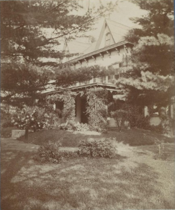
Retirement: Aeola Estate, Wayne, PA
"Sojourn in Paris (1865). Campbell was honored here for his anti-slavery efforts, reflecting his international influence."
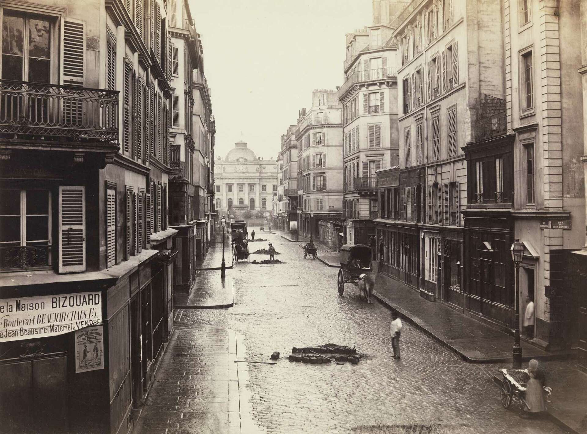
Organizational Involvement: Institut d’Afrique, Paris
"Woodlands Cemetery (1895). Campbell’s modest Celtic cross symbolizes faith and service. Buried alongside family, his legacy endures in U.S. law, politics, and diplomacy."
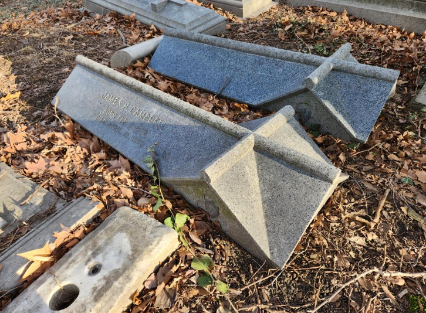
Final Resting Place: Woodlands Cemetery, Philadelphia